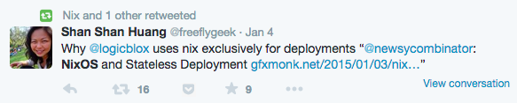
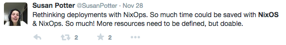

NixOS
Your Next Favorite Server OS
Wout Mertens / @wmertens
whoami
- Full stack DevOps engineer
- NixOS contributor
- Freelancer based in Poland
- Wout.Mertens@gmail.com
Dramatis Personae
| Nix | Functional language to define packages |
| Nixpkgs | Github repo, defines thousands of interdepending packages |
| NixOS | Uses Nixpkgs (only) to build Linux distribution |
| Hydra | Uses Nixpkgs to build Nixpkgs + NixOS, run regression tests |
| NixOps | Defines many NixOS systems together and deploys to cloud |
History
| 2003 | Nix & nixpkgs | Language and packages |
| 2007 | NixOS | Linux distribution |
| 2009 | Hydra | Continuous Integration |
| 2011 | NixOps | Cloud deployer |
| 2013 | First stable NixOS branch | |
Enough Talk
Show us how it works
Ops Experience
Binaries
There is almost nothing installed where you expect it:
$ ls -lR /sbin /bin /usr/bin
ls: cannot access '/sbin': No such file or directory
/bin:
total 4
lrwxrwxrwx 1 root root 75 May 27 16:58 sh -> /nix/store/xmsf9n4bbxjrrpvr2x56jjzyc3xm9j9x-bash-interactive-4.4-p23/bin/sh
/usr/bin:
total 4
lrwxrwxrwx 1 root root 66 May 27 16:58 env -> /nix/store/3qgzqqamhnwm178amyb46pdrzx2nakl5-coreutils-8.31/bin/envOnly `sh` and `env` in /bin and /usr/bin!
Everything is a file or directory in the read-only Nix Store
$ ls -F /nix/store/
00gzp6x5vmdcp5kc8nsw5mlyfr4qlq7l-node-fstream-0.1.31.drv
01zb2w8idl839vmarbg02mng437k4za4-libffi-3.0.13.drv
020rjg5aah4yhsqx4ypfskfbnwrqc67g-openssh-6.7p1/
^C
$ ls /nix/store | wc -l
5792
$ mount|grep /nix/store
/dev/sda1 on /nix/store type ext4 (ro,relatime,data=ordered)Very few things in /etc are writeable
$ find /etc -type f -perm -200 -printf "%M %u %g %p\n"
-rw------- root root /etc/passwd-
-rw-r--r-- root root /etc/NIXOS
-rw-r--r-- root root /etc/passwd
-rw-r--r-- root root /etc/dhcpcd.duid
-rw-r--r-- root root /etc/ssh/ssh_host_ecdsa_key.pub
-rw------- root root /etc/ssh/ssh_host_ecdsa_key
-rw-r--r-- root root /etc/ssh/ssh_host_dsa_key.pub
-rw------- root root /etc/ssh/ssh_host_dsa_key
-rw-r--r-- root root /etc/subuid
-rw-r--r-- root root /etc/adjtime
-rw-r--r-- root root /etc/resolv.conf
-rw------- root root /etc/.pwd.lock
-rw------- root root /etc/shadow-
-rw------- root root /etc/gshadow-
-rw------- root root /etc/crontab
-rw------- root root /etc/shadow
-rw-r--r-- root root /etc/.clean
-rw-r--r-- root root /etc/group
-rw-r--r-- root root /etc/subgid
-rw-r--r-- root root /etc/group-
-rw-r--r-- root root /etc/nixos/configuration.nix
There's not even an /etc/ssh/sshd_config!
$ pgrep -lfa /sshd
1096 /nix/store/m5m4w52wnn733cd4islqgqr8hxa22i9q-openssh-6.7p1/sbin/sshd -f /nix/store/gql0wpr0m574r283vgad6m39gfxszvza-sshd_config
$ ls -l /nix/store/gql0wpr0m574r283vgad6m39gfxszvza-sshd_config
-r--r--r-- 2 root nixbld 506 Jan 1 1970 /nix/store/gql0wpr0m574r283vgad6m39gfxszvza-sshd_configAll system configuration is managed by NixOS
services.openssh = {
enabled = true;
allowSFTP = false;
};Installation
- Take base NixOS image
- Change /etc/configuration.nix
- Run
# nixos-rebuild switch
Configuration
- Change /etc/configuration.nix
- Run
# nixos-rebuild switch
Update
- Run
# nix-channel --update - Run
# nixos-rebuild switch
Upgrade
- Run
# nix-channel --add $NEW_CHANNEL_URL nixos # nix-channel --update - Run
# nixos-rebuild switch
Rollback
- Run
# nixos-rebuild switch --rollback
Demo Time
The Nix Store
- Packages go under /nix/store/<inputs-hash>-name-version
- inputs-hash is determined from all inputs
- Store paths can be files or directories
- Fixed inputs => fixed output
- => Binary packages! (just tarball)
Examples
- Python v2.7.8 => /nix/store/jwnhidzlb8g0cscyi459v3k1hfd3qbar-python-2.7.8/
- Python v2.7.9 => /nix/store/rhghn8brqrz4j5ndkhwnm4afqjvk7zi8-python-2.7.9/
- Python v2.7.8 with other inputs => /nix/store/kzlmbhfmdazbf1y8jxwb1ik7zh9bqn2k-python-2.7.8/
Dependencies
$ ldd /nix/store/jwnhidzlb8g0cscyi459v3k1hfd3qbar-python-2.7.8/bin/python2.7
linux-vdso.so.1 (0x00007fffda7b0000)
libgcc_s.so.1 => /nix/store/n2zcibvfxg6k2wpiipd8bzmc46q0vjy6-gcc-4.8.3/lib64/libgcc_s.so.1 (0x00007fd6cca76000)
libpython2.7.so.1.0 => /nix/store/jwnhidzlb8g0cscyi459v3k1hfd3qbar-python-2.7.8/lib/libpython2.7.so.1.0 (0x00007fd6cc66e000)
libpthread.so.0 => /nix/store/i11d0d4015p0vbdnjq7lb509v9pwp049-glibc-2.19/lib64/libpthread.so.0 (0x00007fd6cc450000)Composing
$ ls -l /run/current-system
lrwxrwxrwx 1 root root 71 Feb 1 15:12 /run/current-system -> /nix/store/naqqwjsqd2ss9n4008sj7224r56h70xg-nixos-15.05pre54730.cbe467e
$ ls -l /run/current-system/
total 52
-r-xr-xr-x 2 root nixbld 14936 Jan 1 1970 activate
dr-xr-xr-x 2 root nixbld 4096 Jan 1 1970 bin
-r--r--r-- 929 root root 0 Jan 1 1970 configuration-name
lrwxrwxrwx 2 root nixbld 51 Jan 1 1970 etc -> /nix/store/iwlph9az3ddfany0zi2jqjzdc56hs8ci-etc/etc
dr-xr-xr-x 2 root nixbld 4096 Jan 1 1970 fine-tune
lrwxrwxrwx 4 root nixbld 52 Jan 1 1970 firmware -> /nix/store/arsa48md6vpzssx7q77vw4wwmizg6rz2-firmware
-r-xr-xr-x 2 root nixbld 5187 Jan 1 1970 init
-r--r--r-- 5 root root 9 Jan 1 1970 init-interface-version
lrwxrwxrwx 4 root nixbld 57 Jan 1 1970 initrd -> /nix/store/a7qffhivs15bn83js63xidlq72pzl8d1-initrd/initrd
lrwxrwxrwx 5 root nixbld 65 Jan 1 1970 kernel -> /nix/store/59fiawb5712jzg689m0y127dc5791dhc-linux-3.14.26/bzImage
lrwxrwxrwx 4 root nixbld 58 Jan 1 1970 kernel-modules -> /nix/store/p38n28cqpr2pfzgj6fbl659dn0iwvx26-kernel-modules
-r--r--r-- 5 root root 10 Jan 1 1970 kernel-params
-r--r--r-- 4 root nixbld 21 Jan 1 1970 nixos-version
lrwxrwxrwx 2 root nixbld 55 Jan 1 1970 sw -> /nix/store/zgb45ax92dz4yxgv06zcz1f4yc1m3s61-system-path
-r--r--r-- 5 root root 12 Jan 1 1970 system
lrwxrwxrwx 4 root nixbld 55 Jan 1 1970 systemd -> /nix/store/jm14g8y06l2m11q069zi0ckiv7hqk2n3-systemd-217
The Magic
What happens at switch time:
- Parse configuration
- Build/download all packages for configuration
- Link them together with symlinks
- Replace /run/current-system with symlink to new system
- Update boot loader to boot into this system
- Tell systemd to stop/start/reload services
Consequences
- All packages, all versions, simultaneously
- Switch is atomic
- Instant rollback
- Stateless:
- Go between any version (*)
- But user state is not managed
(*) As long as systemd can stand it
Show Me More
Nixpkgs
Roll your own distro!
- nixpkgs is a single expression
- comprising many files
- defining all packages together
- lazily evaluated
- Need a special patch to Python?
- Add it in your config!
- Override the whole system
- Or provide it for a single package
NixOS
- NixOS is part of Nixpkgs
- Adds "modules" which configure packages
- Adds glue scripts for booting and switching
- Need a special patch to the OS?
- Add it in your config!
- Override the whole system
- Or provide it for a single service
services.nginx.package = pkgs.nginx.override { rtmp = true; };
NixOps
- NixOS is part of Nixpkgs
- Adds "modules" which configure packages
- Adds glue scripts for booting and switching
- Need a special patch to the OS?
- Add it in your config!
- Override the whole system
- Or provide it for a single service
mnngfltg2: I can't believe I just copied some random person's configuration.nix from github and now I have his exact setup | |
|  |  |
Recap
- Nixpkgs provides stateless packages anywhere
- NixOS
- stateless => safe upgrades
- git commit + config == server
- NixOps combines systems "atomically"
- NixOS == amazing server OS
Things left out of the talk
- nixos-containers
- Hydra
- nixos in Docker
- Windows
- ARM
- DisNix
- Research Papers
- patchelf
- hash-based dependency detection
Engage
NixOS Rollout
shutdown -h
- Thanks to Domen Kožar, Zef Hemel, Tim Cuthbertson, Sander van der Burg and others for concept inspiration
- Ask questions on IRC: #nixos
- Wout.Mertens@gmail.com
Lovingly handcrafted with reveal.js